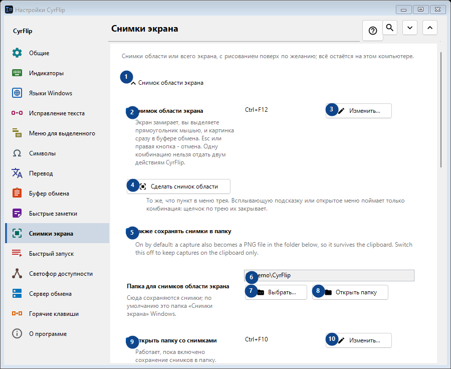
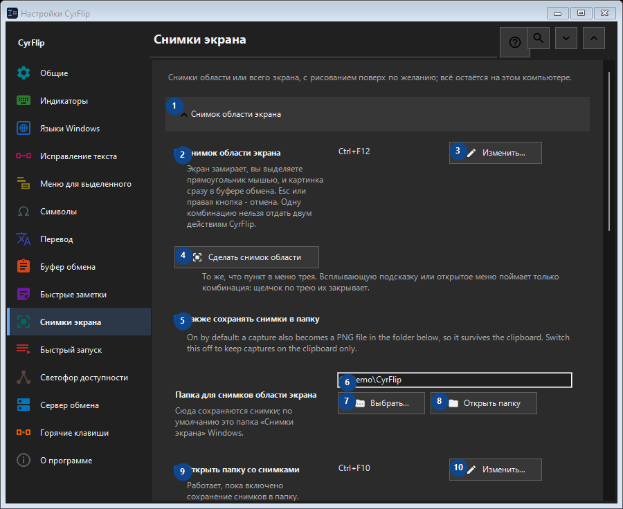

Снимки экрана
Для чего это окно
Снимки области или всего экрана, с рисованием поверх по желанию; всё остаётся на этом компьютере.


Порядок действий
Настройки применяются сразу. Обязательного порядка нет; используйте группы ниже.
Элементы
1. Снимок области экрана
Используйте команду, когда нужно указанное действие. Прочитайте запрос подтверждения перед согласием.
Ваши сочетания клавиш2. Снимок области экрана
Экран замирает, вы выделяете прямоугольник мышью, и картинка сразу в буфере обмена. Esc или правая кнопка - отмена. Одну комбинацию нельзя отдать двум действиям CyrFlip.
Ваши сочетания клавиш3. Изменить - Снимок области экрана
Используйте команду, когда нужно указанное действие. Прочитайте запрос подтверждения перед согласием.
Ваши сочетания клавиш4. Сделать снимок области
То же, что пункт в меню трея. Всплывающую подсказку или открытое меню поймает только комбинация: щелчок по трею их закрывает.
Ваши сочетания клавиш5. Также сохранять снимки в папку
On by default: a capture also becomes a PNG file in the folder below, so it survives the clipboard. Switch this off to keep captures on the clipboard only.
Ваши сочетания клавиш6. Папка для снимков области экрана
Выберите или введите значение для соседней подписи. Проверьте его перед продолжением.
Ваши сочетания клавиш7. Выбрать - Папка для снимков области экрана
Используйте команду, когда нужно указанное действие. Прочитайте запрос подтверждения перед согласием.
Ваши сочетания клавиш8. Открыть папку - Папка для снимков области экрана
Используйте команду, когда нужно указанное действие. Прочитайте запрос подтверждения перед согласием.
Ваши сочетания клавиш9. Открыть папку со снимками
Работает, пока включено сохранение снимков в папку. Открывает ту папку, в которую CyrFlip пишет снимки. Одну комбинацию нельзя отдать двум действиям CyrFlip.
Ваши сочетания клавиш10. Изменить - Открыть папку со снимками
Используйте команду, когда нужно указанное действие. Прочитайте запрос подтверждения перед согласием.
Ваши сочетания клавиш11. Снимок всего экрана
Используйте команду, когда нужно указанное действие. Прочитайте запрос подтверждения перед согласием.
Ваши сочетания клавиш12. Снимок всего экрана
Одно нажатие: все дисплеи снимаются одной картинкой и сразу попадают в буфер обмена. Ничего не замирает на экране.
Ваши сочетания клавиш13. Изменить - Снимок всего экрана
Используйте команду, когда нужно указанное действие. Прочитайте запрос подтверждения перед согласием.
Ваши сочетания клавиш14. Сделать снимок всего экрана
То же, что пункт трея «Снимок всего экрана».
Ваши сочетания клавиш15. Рисование на снимках
Используйте команду, когда нужно указанное действие. Прочитайте запрос подтверждения перед согласием.
Ваши сочетания клавиш16. Рисование на снимках
После снимка замирающая картинка остаётся на экране - рисуйте на ней овалы, прямоугольники, линии и стрелки.
Ваши сочетания клавиш17. Снимок области с рисованием
Capture a selected region and draw on it. One chord cannot belong to two CyrFlip actions.
Ваши сочетания клавиш18. Изменить - Снимок области с рисованием
Используйте команду, когда нужно указанное действие. Прочитайте запрос подтверждения перед согласием.
Ваши сочетания клавиш19. Снимок всего экрана с рисованием
Capture every display as one picture and draw on it. One chord cannot belong to two CyrFlip actions.
Ваши сочетания клавиш20. Изменить - Снимок всего экрана с рисованием
Используйте команду, когда нужно указанное действие. Прочитайте запрос подтверждения перед согласием.
Ваши сочетания клавиш21. Сделать снимок области и рисовать
То же, что комбинация «снимок области с рисованием».
Ваши сочетания клавиш22. Сделать снимок всего экрана и рисовать
То же, что комбинация «снимок всего экрана с рисованием».
Ваши сочетания клавиш